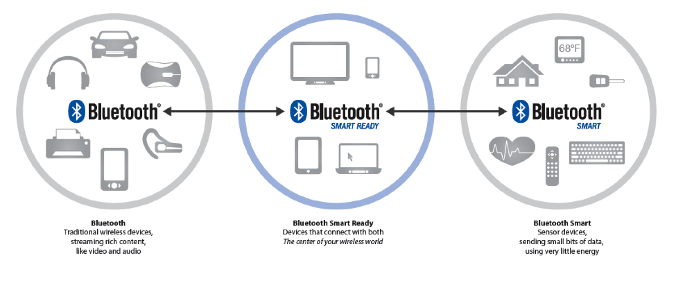
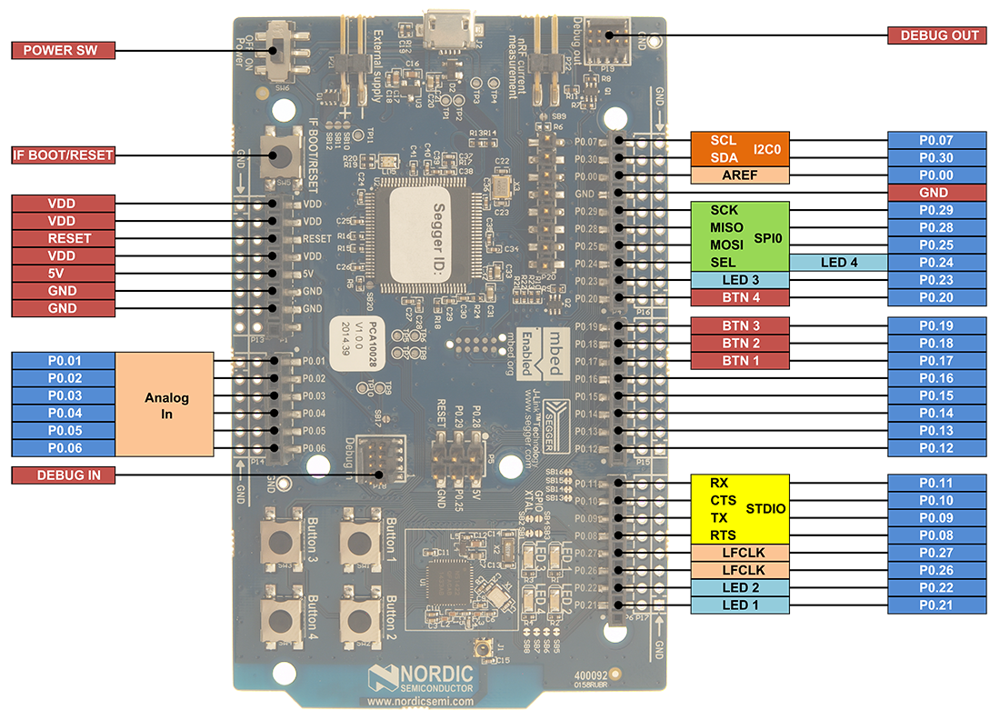
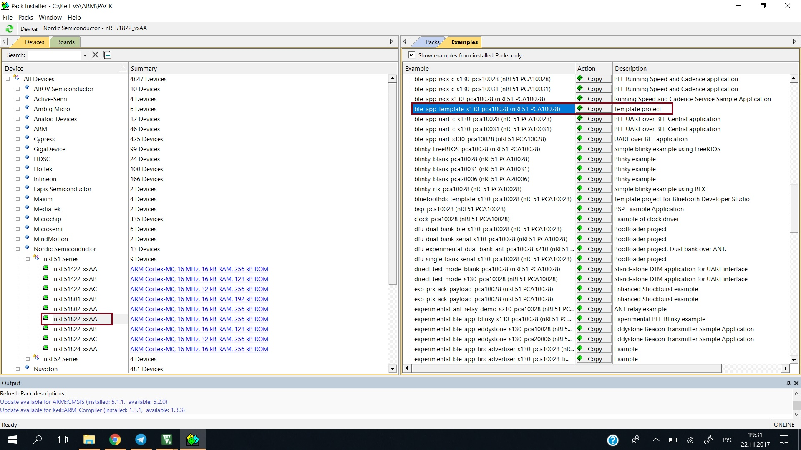
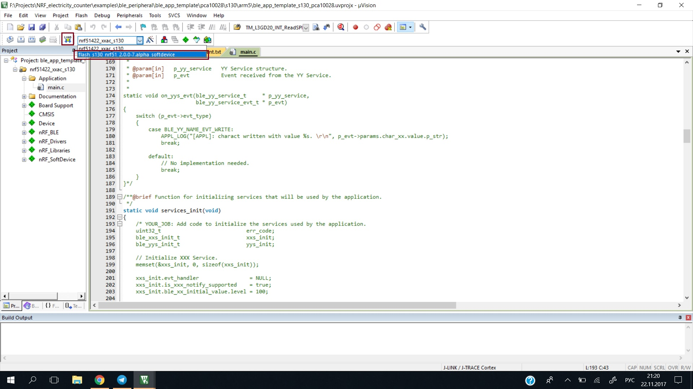
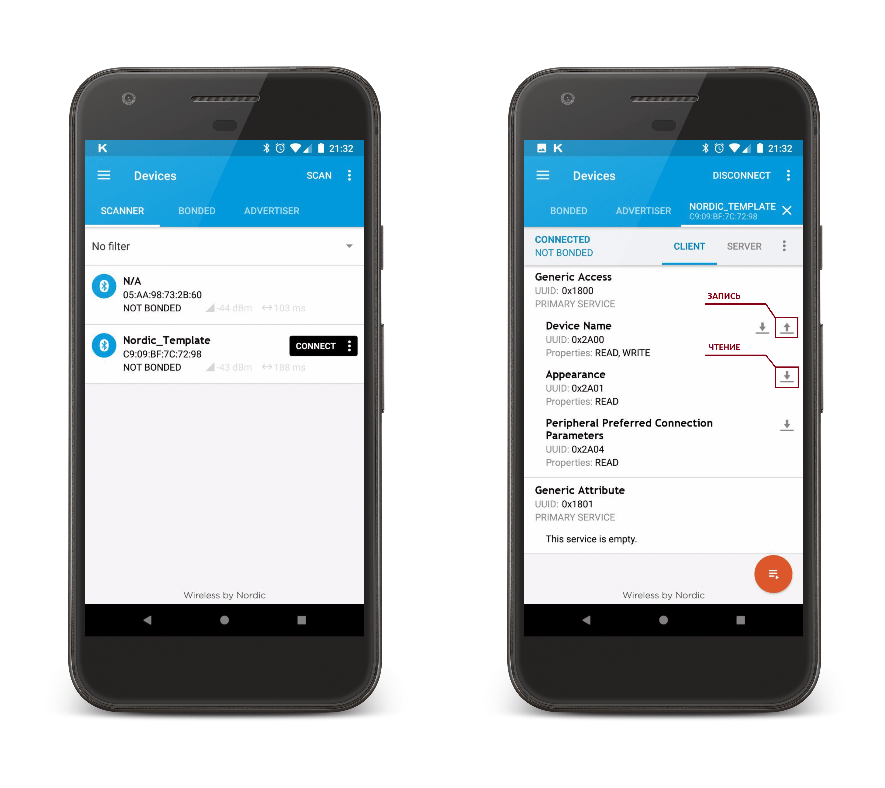
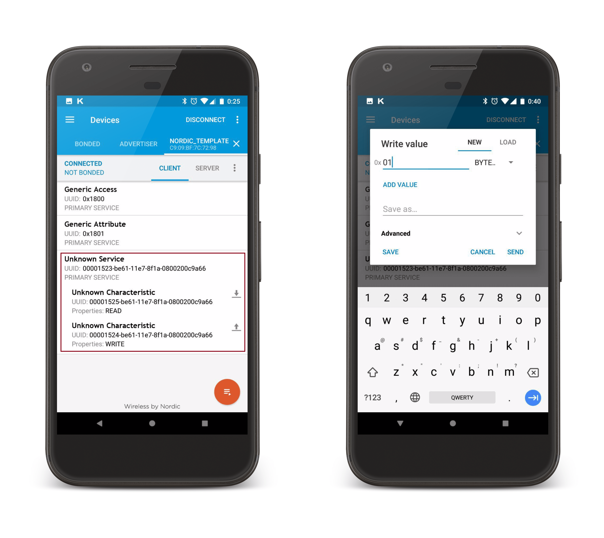

1. Вступление
Добрый день.
В сети гуляет огромное количество уроков программирования под разные простенькие (и не очень) платформы. С каждым годом однотипные туториалы разной степени углубленности по одному и тому же микроконтроллеру штампуются десятками. И это прекрасно, так как обилие статей ведет к снижению порога вхождения в тематику и позволяет уже созревшим программистам не тратить время на поиск прочитанного вдоль и поперек даташита, а просто воспользоваться уже рабочим куском кода инициализации периферии и перейти к проблемам посерьезнее.
Однако есть нюанс — шаг вправо, шаг влево от стандартной подборки STM32/8, AVR и иже с ними или углубление в более сложные интерфейсы тех же самых STM32/8, и тишина. Лишь изредка на далеком-далеком форуме кто-то задает вопрос, который в итоге остается без ответа…
К чему я, собственно, веду. Не так давно возникла необходимость использования в проекте чипа nRF51822 компании Nordic Semiconductor с популярной ныне тематикой Bluetooth low energy (далее — BLE) на борту.

Чип оказался настолько популярным на информационную составляющую, что Google с горем пополам выдал 2-3 ссылки с описанием самого BLE стека и пару абстрактных статей касательно реализации стека у чипов Nordic и Texas instruments (CC2640). Матерые программисты скажут: «Берите примеры от компании Nordic (а их там к слову с избытком) и разбирайтесь». И это верный подход, если бы не одно но, касающееся, по большей части, начинающих программистов и желающих получить быстрый результат: обилие структур, многоуровневые библиотеки — все это прекрасно и логично, но избыточно для быстрого старта или маленького проекта. Все это увеличивает порог вхождения до неоправданных высот.
С учетом всего вышесказанного предлагаю рассмотреть простенький вариант реализации приложения обмена с использованием чипа NRF51822, позволяющего в общих чертах разобраться в основных аспектах разработки подобных систем. И это будет… Естественно, светодиод. Под управлением удаленного смартфона.
2. Необходимые программные и аппаратные средства
Вместо смартфона можно использовать USB Dongle, но его цена (77 $), по сравнению с ценой отладочной платы NRF51 DK (49 $), немного отталкивает. В данном примере его наличие необязательно, но всё же не стоит недооценивать его важность.

3. Создание шаблона
Первоочередной задачей является создание в Keil шаблона и подключение всех необходимых библиотечных файлов для использования BLE стека. Сам по себе процесс с нуля достаточно затратный по времени, поэтому мы воспользуемся стандартным шаблоном, который можно найти среди многочисленных примеров, которые Keil любезно прячет в Pack Installer.

Функции, реализованные в примере, по большей части необходимы для создания подключения и организации реакции BLE стека на возникающие события (подключение, отключение и т.д.). На данный момент не вижу смысла на них останавливаться, чтобы не перегружать информацией, да и трогать их пока не стоит, пока нет общего понимания о процессе использования стека (В приложенном к статье проекте все функции раскомментированы на русском языке). Подробнее с самим стеком можно познакомиться по ссылке. С параметрами подключения в дальнейшем можно поэкспериментировать также, как и с событиями стека, но это тема не для этой статьи.
4. Прошивка стека и приложения
Как уже не единожды упоминалось в прочих статьях, посвященных реализации BLE стека на различных устройствах, — BLE стек шьется в нижнюю часть флеш-памяти, после чего загружается пользовательское приложение. К счастью для непосвященных в данный аспект, в используемом шаблоне адресация уже задана, и все что нам необходимо сделать — в разделе Select Target выбрать SoftDevice S130 и нажать загрузить.

Теперь таким же образом загрузим скомпилированное пользовательское приложение.
5. Предварительное тестирование
На данный момент загруженное приложение не выполняет никаких полезных для нас функций, но оно умеет рассылать рекламные (advertising) пакеты с возможностью подключения к устройству. Подробную информацию в полной мере можно получить в статье, которую я уже упоминал ранее.
Для того, чтобы подключиться к полученному устройству нам необходимо скачать на смартфон под управлением Android программу nRF Connect for Mobile. Запускаем, сканируем эфир и находим наше устройство — Nordic_Template. Можем подключиться, проверить все ли верно. В дальнейшим с помощью данной программы мы сможем читать и писать характеристики устройства, тем самым взаимодействуя с ним.

Как уже говорилось ранее, на данный момент устройство никаких полезных данных в себе не несет, за исключением служебных параметров. Взаимодействие с устройством в BLE обеспечивается через чтение/запись характеристик. Характеристики объединяются в сервисы, они затем объединяются в профили, а вообще это достаточно серьезная тема, для отдельной статьи. Однако стоит все-таки простыми словами разъяснить, какую же функцию в первом приближении несет в себе характеристика. Формально, это переменная стека, имеющая определенные параметры (размер, тип, тип доступа), определяющие взаимодействие с ней. Для всех характеристик можно разрешить чтение, запись, уведомление и т.д. Через характеристику, имеющую разрешение на запись, можно передать любые данные на устройство, а через характеристику с разрешением чтения — получить данные.
Так, к примеру, можно реализовать систему «запрос-ответ». Представим себе устройство, имеющее раз параметров (температура, влажность, ускорение). Можем создать 3 различные характеристики и читать их значения. А теперь представим, что данные нам необходимо получать за определенный период (за прошлый месяц, к примеру). В таком случае, мы создадим характеристику с разрешением записи и будем писать в нее номер месяца, а устройство, в свою очередь, выставлять в характеристики запрошенные данные.
Но вернемся к нашей задаче. Для того, чтобы управлять светодиодом, необходимо создать соответствующий сервис. Сервис будет содержать 2 характеристики:
Прежде чем начать писать свой первый сервис, необходимо понимать, что у каждого сервиса и каждой характеристики в нем содержащейся, должен быть свой уникальный адрес (UUID). Благодаря этому адресу, устройства (например, смартфон) могут определить, что нужно сделать с конкретными данными. Стоит заметить, что ряд профилей, сервисов и характеристик являются для BLE стандартными, имеют свои зарегистрированные в Bluetooth SIG 16-битные адреса и заранее определенный набор выполняемых функций. Смартфон, получая данные от устройства, на котором реализован один из таких профилей, точно знает состав посылки и имеет все необходимые функции для дальнейшей реализации полученной информации.
Нам же доступны только 128-битные адреса. Зададим 3 UUID адреса, один для сервиса и два для характеристик. Для этого используем специальный генератор, предназначенные для формирования случайных UUID. Советую при генерации выбрать Time-based, тогда UUID сгенерируются последовательно с одинаковой основной частью для всех трех адресов.
/* Основной UUID (одинаковая часть UUID для сервиса и характеристик) */
#define LED_BASE_UUID {0x66, 0x9A, 0x0C, 0x20, 0x00, 0x08, 0x1A, 0x8F, 0xE7, 0x11, 0x61, 0xBE, 0x00, 0x00, 0x00, 0x00}
/* Частный UUID (различная часть UUID для сервиса и характеристик) */
#define LED_SERVICE_UUID 0x1523
#define CONTROL_CHAR_UUID 0x1524
#define READ_CHAR_UUID 0x1525
/* Необходимо переопределить UUID в переменной стандартного примера */
static ble_uuid_t m_adv_uuids[] = {{LED_SERVICE_UUID, BLE_UUID_TYPE_BLE}};
Теперь перейдем непсоредственно к созданию сервиса. В нашем шаблоне заполним функцию services_init:
services_init
uint16_t led_handles; // указатель на обработчик (необходим для стека)
void services_init(void){
ble_uuid_t ble_uuid;
/* Основной 128 - битный UUID */
ble_uuid128_t base_uuid = LED_BASE_UUID;
uint8_t uuid_type;
ble_uuid.type = BLE_UUID_TYPE_VENDOR_BEGIN;
ble_uuid.uuid = LED_SERVICE_UUID;
sd_ble_uuid_vs_add(&base_uuid, &ble_uuid.type);
sd_ble_gatts_service_add(BLE_GATTS_SRVC_TYPE_PRIMARY, &ble_uuid, &led_handles);
}
Следующим шагом реализуем универсальную функцию для создания характеристик:
char_add
/* Универсальная функция создания характеристики
* UUID - Идентификатор характеристики
* handles - указатель на обработчик (необходим для стека)
* n_bytes - размер атрибута характеристики
* iswrite, isnotf, isread - разрешения на запись, нотификацию, чтение */
uint32_t char_add(uint16_t UUID, ble_gatts_char_handles_t * handles, uint8_t n_bytes, bool iswrite, bool isnotf, bool isread){
ble_gatts_char_md_t char_md;
ble_gatts_attr_md_t cccd_md;
ble_gatts_attr_t attr_char_value;
ble_uuid_t char_uuid;
ble_gatts_attr_md_t attr_md;
memset(&cccd_md, 0, sizeof(cccd_md));
BLE_GAP_CONN_SEC_MODE_SET_OPEN(&cccd_md.read_perm);
BLE_GAP_CONN_SEC_MODE_SET_OPEN(&cccd_md.write_perm);
cccd_md.vloc = BLE_GATTS_VLOC_STACK;
memset(&char_md, 0, sizeof(char_md));
char_md.char_props.notify = isnotf; // Разрешение на уведомление;
char_md.char_props.write = iswrite; // Разрешение на запись;
char_md.char_props.read = isread; // Разрешение на чтение;
char_md.p_char_user_desc = NULL;
char_md.p_char_pf = NULL;
char_md.p_user_desc_md = NULL;
char_md.p_cccd_md = &cccd_md;
char_md.p_sccd_md = NULL;
/* тип UUID - 128 - битный */
char_uuid.type = BLE_UUID_TYPE_VENDOR_BEGIN;
char_uuid.uuid = UUID;
memset(&attr_md, 0, sizeof(attr_md));
BLE_GAP_CONN_SEC_MODE_SET_OPEN(&attr_md.read_perm);
BLE_GAP_CONN_SEC_MODE_SET_OPEN(&attr_md.write_perm);
attr_md.vloc = BLE_GATTS_VLOC_STACK;
attr_md.rd_auth = 0;
attr_md.wr_auth = 0;
attr_md.vlen = 0;
attr_char_value.p_uuid = &char_uuid;
attr_char_value.p_attr_md = &attr_md;
attr_char_value.init_len = n_bytes;
attr_char_value.init_offs = 0;
attr_char_value.max_len = n_bytes; // Размер атрибута;
attr_char_value.p_value = NULL; // Начальное значение атрибута;
/* Зарегистрировать характеристику в стеке */
sd_ble_gatts_characteristic_add(led_handles, &char_md, &attr_char_value, handles);
return 0;
}
Функции создания сервиса и характеристик готовы. Теперь прикинем, что нам еще необходимо. А необходимы нам две вещи:
Начнем с функции обработки записи. У стека есть один обработчик прерываний ble_evt_dispatch, который вызывается в случае возникновения каких-либо событий стека. Из данного обработчика вызываются все прочие, пользовательские, обработчики прерывания, которые реагируют на событие, если в них определена реакция. В данном случае писать отдельный обработчик мы не будем, напишем лишь функцию, выполняющую действия в соответствии с полученными данными, а интересующее нас событие будем проверять в одном из стандартных обработчиков.
on_ble_evt
static void on_ble_evt(ble_evt_t * p_ble_evt)
{
uint32_t err_code;
/* Переменная содержащая в себе полученную со смартфона информацию */
ble_gatts_evt_write_t * p_evt_write = &p_ble_evt->evt.gatts_evt.params.write;
switch (p_ble_evt->header.evt_id)
{
case BLE_GAP_EVT_CONNECTED:
err_code = bsp_indication_set(BSP_INDICATE_CONNECTED);
APP_ERROR_CHECK(err_code);
m_conn_handle = p_ble_evt->evt.gap_evt.conn_handle;
break;
case BLE_GAP_EVT_DISCONNECTED:
m_conn_handle = BLE_CONN_HANDLE_INVALID;
break;
/* Событие получения новых данных в характеристику */
case BLE_GATTS_EVT_WRITE:
/* Функция установки состояния светодиода (от входных данных) */
write_handler(p_evt_write->data);
break;
default:
break;
}
}
Саму функцию установки состояния светодиода приводить не буду, это достаточно просто, тем более в прикрепленном проекте это все будет реализовано.
Теперь перейдем к функции обновления данных в характеристике. Наш смартфон сам по себе не узнает, что состояние светодиода изменилось. И даже в случае изменения переменной, отвечающей за состояние светодиода на устройстве, чтение характеристики все равно покажет неизмененное значение. Для его изменения необходимо зарегистрировать в BLE стеке данное изменение. Добавим еще одну функцию (она не универсальна, написана под конкретную характеристику, но интуитивно понятна и легко переписывается под любые нужды):
data_update
uint32_t data_update(uint8_t *data, uint16_t value_handle)
{
uint32_t err_code;
ble_gatts_value_t gatts_value;
uint8_t update_buffer[1];
/* копируем данные (если размер более одного байта) */
memcpy(update_buffer,data,(sizeof(update_buffer)/sizeof(uint8_t)));
memset(&gatts_value, 0, sizeof(gatts_value));
/* сообщаем размер аттрибута */
gatts_value.len = sizeof(update_buffer)/sizeof(uint8_t);
gatts_value.offset = 0;
/* записываем новое значение характеристики */
gatts_value.p_value = update_buffer;
/* регистрируем изменения в стеке */
err_code = sd_ble_gatts_value_set(m_conn_handle, read_handles.value_handle, &gatts_value);
return err_code;
}
Осталось дело за малым: проинициализировать сервис и создать характеристики в основной функции:
main
/* обработчики для характеристик (нужны для стека) */
ble_gatts_char_handles_t control_handles,read_handles;
int main(void)
{
uint32_t err_code;
bool erase_bonds;
timers_init();
buttons_leds_init(&erase_bonds);
ble_stack_init();
device_manager_init(erase_bonds);
gap_params_init();
advertising_init();
/* Инициализация сервиса */
services_init();
/* Создание характеристики для чтения данных с устройства */
char_add(READ_CHAR_UUID,&read_handles,1,0,0,1);
/* Создание характеристики для записи данных в устройство */
char_add(CONTROL_CHAR_UUID,&control_handles,1,1,0,0);
conn_params_init();
/* Переход в режим рассылки рекламных пакетов */
err_code = ble_advertising_start(BLE_ADV_MODE_FAST);
APP_ERROR_CHECK(err_code);
for (;;)
{
power_manage();
}
}
7. Заключительное тестирование
Компилируем, заливаем и снова запускаем nRF Connect for Mobile. Видим, что у нас есть сервис и две характеристики. Они являются неизвестными для смартфона, так как в его базах таких UUID не числится, и что делать с этим он не понимает. Однако теперь мы можем спокойно управлять светодиодом путем записи в характеристику «1» или «0», а также читать текущее его значение. Данный пример можно применить практически к любой задаче, например, снятие параметров с датчиков. В дальнейшем можно написать приложение под Android, которое будет с легкостью использовать ваши сервисы в ваших целях.

8. Заключение
Данная статья призвана упростить понимание процесса обмена данными и позволить новичкам воспользоваться готовым разобранным примером, чтобы в дальнейшем на практике постигать все особенности BLE стека от Nordic Semiconductor. Ради простоты были опущены некоторые особенности и нюансы реализации, а их у подобных устройств немало. Однако ни одна статья не поможет разобраться без методичного вхождения в тему посредством проб и ошибок. Все вышеизложенное лишь позволит вам как можно быстрее начать ошибаться. Удачи)
P.S. Если тематика и манера изложения будут тепло встречены, то существует вероятность в угоду современным трендам расширить подборку статей, и в ближайшее время рассмотреть некоторые нюансы BLE стека, реализацию популярной периферии (ADC, SPI, UART, I2C) как с использованием библиотек, так и в регистрах, а также BLE приложение под android для завершения цикла.
X. Полезные материалы